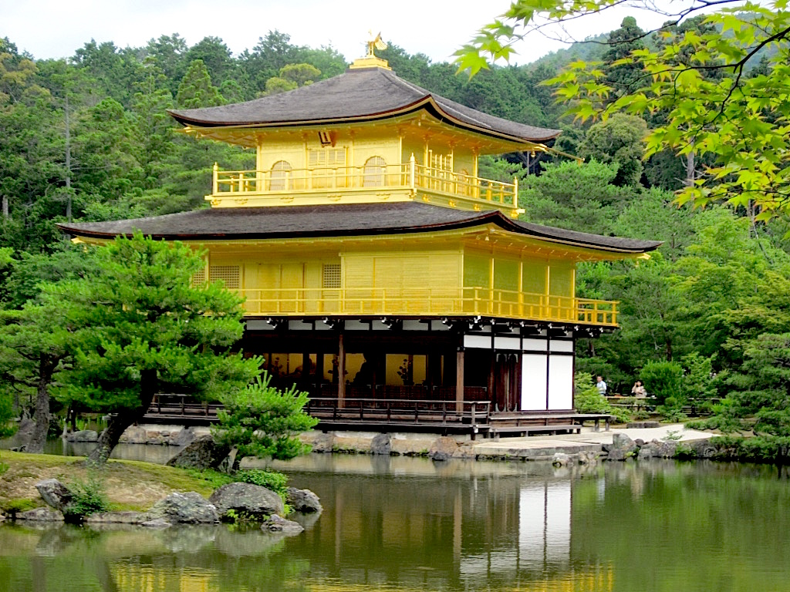
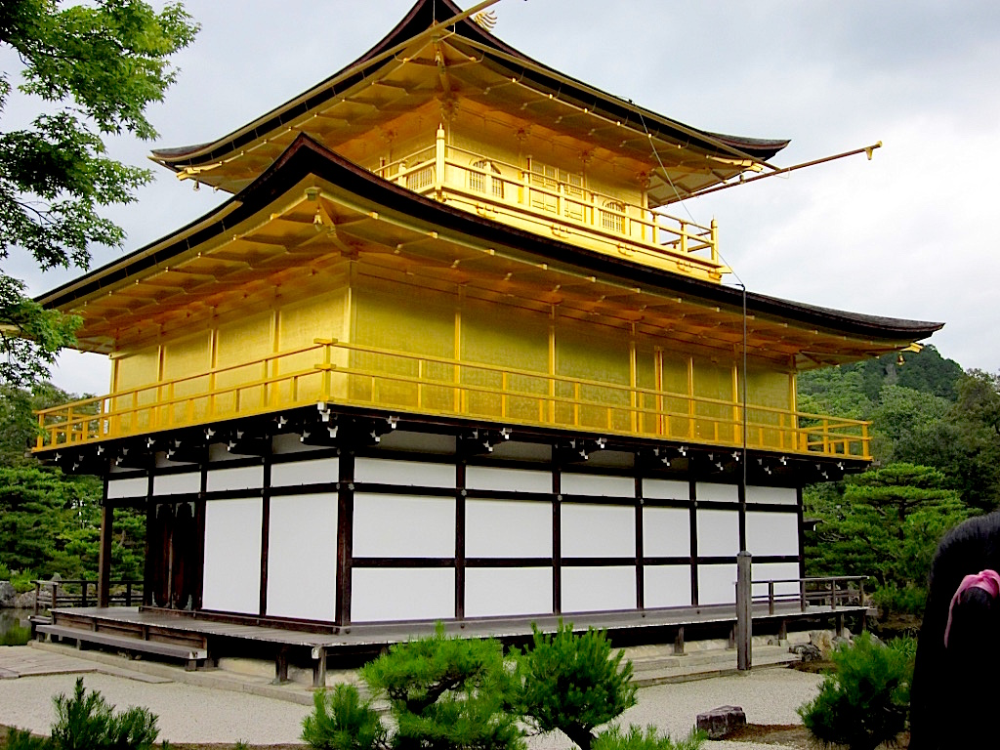
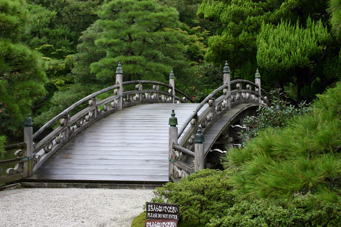
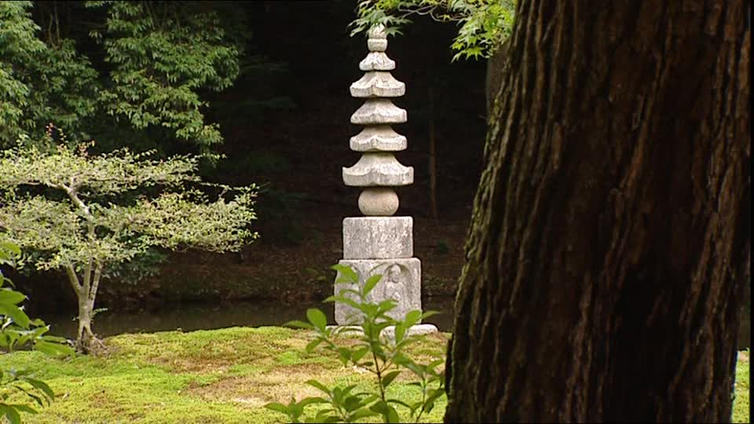

Kyoto - Kinkaku-ji is among the most beautiful places in Kyoto. The location is a Zen garden with a pretty lagoon, dotted with miniature islands, and the site of one of the most loved Buddhist temples in Japan, known as the Golden Pavilion.
Zen Buddhism was introduced from China into Japan at the end of the 12th century becoming widely accepted among the Samurai class and the ruling warlords. The gardens of Zen temples in Kyoto in the 14th and 15th centuries were similar to the Chinese gardens of the time, including religious buildings set among small lakes and islands designed to stimulate meditation.
When Ashikaga Yoshimitsu (1358-1408), the third shogun of the Ashikaga Shogunate, abdicated in favour of his 9-year-old son Yoshimoshi to devote himself to religious life as a Buddhist monk, he requested that his state, known as Kitayama-dai, would become a Buddhist temple. At the time of Yoshimitsu’s death, Yoshimoshi complied by dedicating the property to Kannon, the Buddhist Goddess of Mercy and Compassion, and re-naming the grounds as Rokuon-ji (meaning Deer Park Temple).
After the Kitayama-dai villa was turned into a temple, many of the luxurious buildings belonging to the Shogun were removed. Only one building remained on the site, the three story temple, with the second and third floors wrapped in gold-leaf, which became known as Kinkaku or “The Golden Pavilion”.
The Kinkaku-ji complex is located on the gently-sloping, lush forested Kinugasa Hill in the northern side of Kyoto. The complex includes a stately Chinese Gate, the Abbot’s chambers, the Monk’s living quarters, a graceful Bell Tower and the stunning Golden Pavilion, which reflects its image on the water from almost anywhere along the cherry-tree-lined paths surrounding the pond.
The buildings in the site, including the Golden Pavilion, have been reconstructed and renovated over time, however, the gardens and the lake, originally designed for boating and strolling, have remained the same for hundreds of years, allowing visitors to enjoy the same magnificence and scenic beauty of the site just as the Ashikaga shogun saw it during his lifetime.
“Courage, perseverance in adversity, and strength of purpose”
The pond has several islands of various sizes, and many stones arranged in the shape of animals, a turtle and a crane, symbolizing longevity and good fortune. Some sections of the pond are covered with lotus plants, symbolizing truth, and in the water abound red-white koi carps representing “courage, perseverance in adversity, and strength of purpose”.
The garden is also adorned with gravel paths, stone lanterns and stairways, a beautiful waterfall and, close to the way out of the grounds, there is a peaceful tea-garden among the trees.
Like many ancient structures in Kyoto, the Golden Pavilion has been completely rebuilt following complete destruction by fire. The gorgeous pavilion survived fires and earthquakes for centuries until 1950 when a mentally disturbed 21-year-old novice monk set fire to the pavilion.
The building and most of its content were reduced to ashes. The novice monk, however, survived the fire and at the time of his arrest he confessed of being overwhelmed by the temple’s beauty and wished to die in its flames. An exact replica of the original temple was built and completed in 1955.
The Japanese Agency for Cultural Affairs designated Kinkaku-ji as a National Special Historic Site and a National Place of Scenic Beauty. In 1994, it was inscribed by UNESCO as a World Heritage Site, one of 17 locations comprising “The Historic Monuments of Ancient Kyoto”. The Golden Pavilion is one of the best known religious buildings in Japan attracting a large number of visitors annually.
The temple complex is open daily from 9 AM to 5 PM. Admission is ¥400. To get to the temple take bus number 101 or 205 from Kyoto Station. A faster alternative is taking the Karasuma Subway Line to Kitaoji Station from where the temple can be reached by a 10-minute bus ride.
Next >